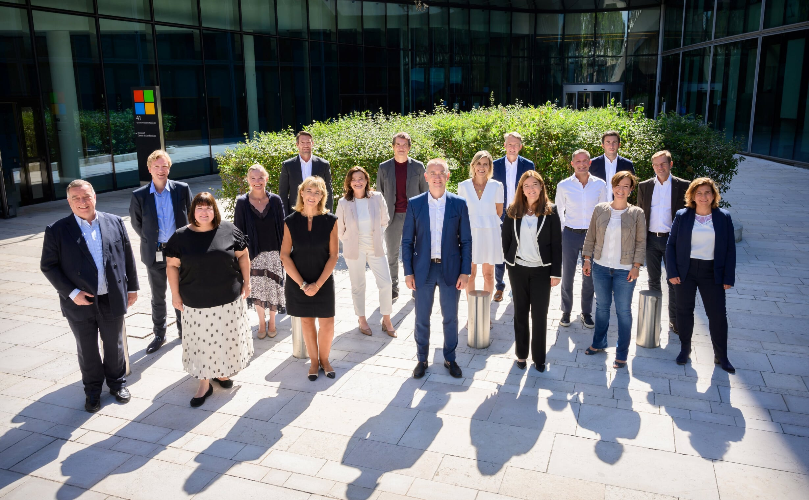

Sobre a Microsoft
A Microsoft é uma das líderes globais no desenvolvimento de tecnologia, fornecendo software, hardware e serviços inovadores para empresas e consumidores ao redor do mundo.
Missão
A Microsoft é uma das maiores empresas de tecnologia do mundo, fundada em 1975 por Bill Gates e Paul Allen, com o objetivo inicial de desenvolver e vender intérpretes de BASIC para o Altair 8800, um dos primeiros microcomputadores. A empresa ficou famosa por criar o Windows, o sistema operacional mais usado no mundo, e o Microsoft Office, uma das suítes de produtividade mais populares. Além disso, a Microsoft desempenha um papel de destaque no mercado de computação em nuvem com a plataforma Azure, e no setor de jogos com o console Xbox. A Microsoft também é líder em inovação em áreas como inteligência artificial, computação quântica, e soluções empresariais. A empresa possui um portfólio diversificado de produtos e serviços, incluindo dispositivos como o Surface, a plataforma de videoconferências Teams, e a LinkedIn, uma das maiores redes profissionais do mundo, adquirida pela Microsoft em 2016. Com sede em Redmond, Washington, a Microsoft tem um impacto global, com filiais e operações em muitos países. A empresa também tem se empenhado em questões como sustentabilidade, inclusão digital e responsabilidade social corporativa.
Visâo
A visão da Microsoft é "capacitar cada pessoa e cada organização no planeta a alcançar mais." Essa visão reflete o compromisso da empresa em fornecer ferramentas e soluções tecnológicas que ajudem indivíduos e empresas a atingirem seu potencial máximo, seja por meio de software, serviços na nuvem ou hardware. Ao longo dos anos, a Microsoft tem focado em ser uma líder em inovação, com produtos como o Windows, o Microsoft Office, o Azure, e o Xbox, buscando transformar a maneira como as pessoas trabalham, se conectam e se divertem. A empresa também tem trabalhado para promover a inclusão digital, sustentabilidade e a responsabilidade social.
Valores
- Inovação constante
- Responsabilidade social e ambiental
- Comprometimento com a qualidade e excelência
- Respeito às pessoas e à diversidade
Equipe
Sede